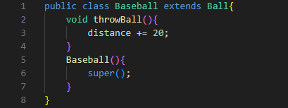
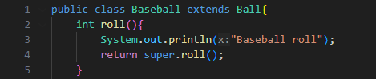
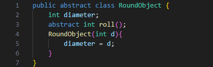
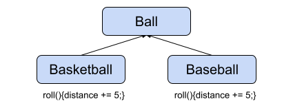
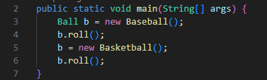

As mentioned before, a class acts as a blueprint for an object. However, a class can extend the function of another class, becoming a child class, or subclass. A subclass has a "is a" relationship with its superclass. A subclass will always be a more specialized version of its superclass or, more specifically, an extension of it. However, if the class has a "has a" relationship with another class, the class does not extend the other class.
For example, a Mercedes "is a" Car, and "has a" Door. The
Mercedes extends Car, but does not extend Door.
It can still use the methods of Door, however.
These subclasses inherit the methods and variables of the parent class, or superclass. The subclass is able to access the variables directly, if they are declared as protected or public, and indirectly through get methods otherwise. Methods, on the other hand, can only be accessed if they are declared as public or protected in the superclass.
To create a subclass, you must use the "extends" keyword after the class name in the class header. After the keyword, simple put the name of the class which will become the superclass.
Something a subclass can do is override a superclass method. This means that the subclass creates a method of the same name and parameters as a superclass method. This time, when the program calls the method, the subclass override will be used instead of the superclass method. However, overloads of the superclass method will still work (unless overrided as well).
A subclass can also specify the use of its superclass methods with the "super" keyword. This means that you can have an overridden method and still use the original method in the superclass.
This is especially useful for constructors, as you can make a direct call to a superclass constructor with "super(parameters)" to set up the superclass part of the object. Do note that the call must be at the start of the constructor, and that if a call is not made the program automatically calls the no-argument superclass constructor.
Classes in java can be made solely to be extended, which means that they have abstract methods. Abstract methods are methods which exist without implementation, which means that they can't do anything. These abstract methods must be overridden in the subclass in order to function. Abstract classes may also have regular implemented methods. Abstract methods are defined with the "abstract" keyword.
Abstract classes cannot be used to create objects, but can be used in polymorphism.
Interfaces are purely abstract, with no concrete methods at all. Interfaces have no constructor, and only have abstract methods. However, methods in an interface are not defined with abstract, as it is implied that they are.
An interface exists for the purpose of pre-defining methods that a class must have. A class that implements an interface must create a concrete implementation of all the methods in the interface (unless it is abstract).
Interfaces are very useful for polymorphism as all the methods in the interface must exist within all classes that implement it.
Polymorphism is a very strange feature of Java, where you can refer a superclass (or interface, but I will just be referring to them all as superclasses here) variable to a subclass object. This means that the superclass reference variable can access the override methods of any of its subclasses.
For a superclass variable to be able to access a subclass method, the superclass must contain a method of the same name (and parameters if it's not an interface). This is so that the compiler recognizes the method as the superclass method. However, the actual method is determined in run-time and the program runs the method of the object the variable refers to.
Polymorphism is very useful for running different methods from the same line of code, by simply switching the object the variable refers to.
For example, a superclass Ball could run roll() on both subclasses Basketball and Baseball.
 